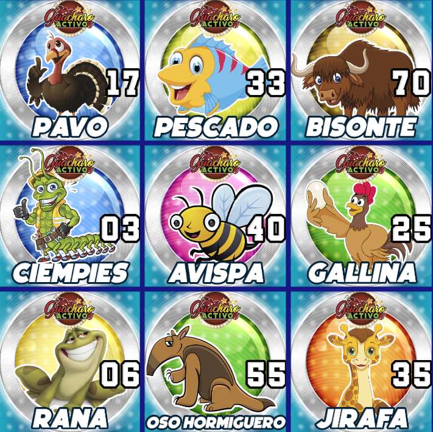
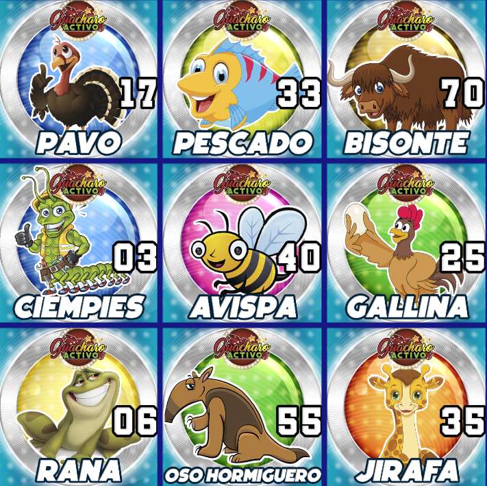

🚨8 Poderozas Oraciónes Para La Buena Suerte: En El Dinero, y Las Lotería🚨
Dr.Animalitos / 06 jul, 2024
“Estas bellas plegarias te ayudarán a atraer la buena suerte y alejar las malas vibras de tu alrededor. De esa manera, podrás alcanzar la prosperidad y el éxito.: